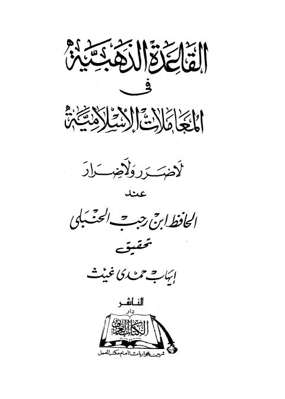
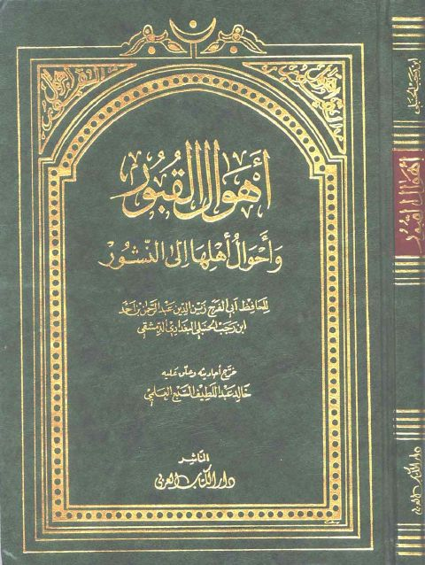

دار الكتاب العربي
Publisher
Resources

القاعدة الذهبية في المعاملات الإسلامية لا ضرر ولا ضرار القاعدة الذهبية في المعاملات الإسلامية لا ضرر ولا ضرار عبد الرحمن بن أحمد بن رجب الحنبلي
أهوال القبور وأحوال أهلها الى النشور أهوال القبور وأحوال أهلها الى النشور ابن رجب الحنبلي البغدادي الدمشقي كتاب أهوال القبور في أحوال أهلها إلى النشور- دار الكتاب العربي
كتاب أهوال القبور في أحوال أهلها إلى النشور- دار الكتاب العربي
عبد الرحمن بن رجب الحنبلي
كتاب أهوال القبور في أحوال أهلها إلى النشور- دار الكتاب العربي
كتاب أهوال القبور في أحوال أهلها إلى النشور- دار الكتاب العربي
عبد الرحمن بن رجب الحنبلي
 التقريب والتيسير لمعرفة سنن البشير النذير- ت. الخشت
التقريب والتيسير لمعرفة سنن البشير النذير- ت. الخشت
يحيى بن شرف النووي
التقريب والتيسير لمعرفة سنن البشير النذير- ت. الخشت
التقريب والتيسير لمعرفة سنن البشير النذير- ت. الخشت
يحيى بن شرف النووي